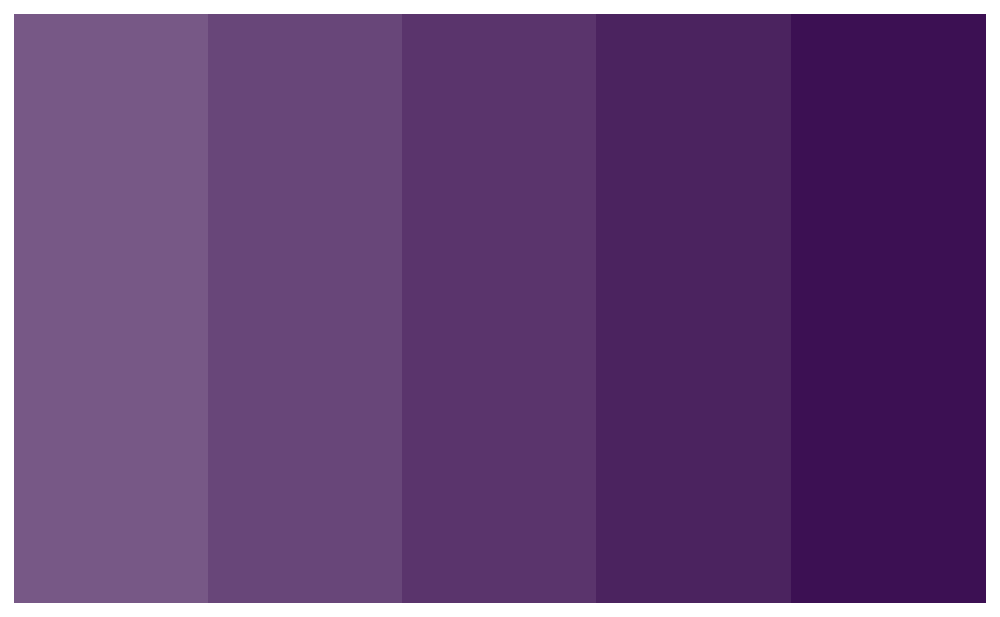

warwickplots is an R package with colour palettes and a ggplot2 theme that are consistent with The University of Warwick’s branding, especially its colours and typography.
The palettes are built using the palettes package. The ggplot2 theme is heavily inspired by the work of Cara Thompson, particularly this talk on applying a unifying aesthetic to your plots.
The palettes
The package offers six colour palettes: one discrete, two divergent and three sequential:
library(warwickplots)
#> Loading required package: palettes
plot(warwick_palettes)warwick_palettes is essentially a list, and so
individual palettes can be accessed by name:1
warwick_palettes$primary
#> <palettes_colour[6]>
#> • #3C1053
#> • #6DCDB8
#> • #CB333B
#> • #F1BE48
#> • #E87722
#> • #00A9CEEach palette is essentially a vector, so can be subsetted in the usual way to create new palettes:
warwick_palettes$primary[c(1, 3, 5)]
#> <palettes_colour[3]>
#> • #3C1053
#> • #CB333B
#> • #E87722The palettes package provides a palettes::pal_ramp()
function for interpolating between colours. For example, consider the
warwick_palettes$aubergine palette:
plot(warwick_palettes$aubergine)To generate a new palette of five colour values between the darkest and mid-point of the full palette, and reverse it (then visualise it), we can do the following:
ends <- warwick_palettes$aubergine[c(1, 4)] # get new end-points
pal_ramp(ends, n = 5, direction = -1) |> plot()
For more on methods for working with palettes, see the palettes vignette in the palettes package.
Using warwickplots with ggplot2
Scales
Loading warwickplots also loads the palettes package, which provides colour and fill scales for using the palettes in ggplot2. These are:
scale_colour_palette_d()scale_colour_palette_c()scale_colour_palette_c()scale_fill_palette_d()scale_fill_palette_c()scale_fill_palette_c()
The _d variants are for discrete scales, the
_c variants are for continuous scales and the
_b variants are for binned scales.
theme_warwick()
theme_warwick() is an extension of
ggplot2::theme_minimal(), offering the following in
addition:
- Text hierarchy, with different sizes and colours
- Spacing, giving the text room to breathe
- Uses
ggtext::element_textbox_simple()for the plot title and subtitle, to enable use of markdown and CSS styling, and text-wrapping if the title/subtitle is long - Places the legend above the plot
- Uses Lato or Avenir Next font (for online or print use respectively), if your system is set up for it
Below is a plot that uses the warwick_palettes::primary
palette and theme_warwick().
library(ggplot2)
library(palmerpenguins)
ggplot(penguins, aes(flipper_length_mm, body_mass_g, group = species)) +
geom_point(aes(colour = species, shape = species), alpha = 0.8, size = 2) +
scale_color_palette_d(warwick_palettes$primary) +
labs(title = "Penguin Size, Palmer Station LTER",
subtitle = "Flipper length and body mass for **<span style = 'color:#3C1053;'>Adelie</span>**, **<span style = 'color:#6DCDB8;'>Chinstrap</span>** and **<span style = 'color:#CB333B;'>Gentoo</span>** Penguins. This is based on data made available in the **palmerpenguins** R package.",
caption = "Visualization: Ella Kaye, Data: Gorman, Williams & Fraser (2014) DOI: 10.1371/journal.pone.009008",
x = "flipper length (mm)",
y = "body mass (g)") +
theme_warwick() +
theme(legend.position = 'none')Note that any theme_warwick() defaults can be overridden
with a subsequent call to theme().
See the using warwickplots with ggplot2 vignettes for more information and examples and also the using palettes with ggplot2 vignette in the palettes package. The palettes package also has vignettes demonstrating how to use palettes with the gt package and the biscale package.
Typography and setting up custom fonts
The University of Warwick’s typography
brand guidance is to use the font Lato for all online text and the
font Avenir Next for all print material. theme_warwick()
has a use argument, that can be one of
"online" or "print" (defaults to
"online"), which will ensure the appropriate font for the
use, if your system is set up for it, i.e. you have the fonts
installed and the packages to render them in a plot. This section
contains guidance on making sure your system is suitably set-up.
Setting up ragg
You need to have the ragg, systemfonts, and textshaping packages installed. Installing ragg should install the other two:
install.packages('ragg')You then need to ensure that whenever you output a plot, you do so using the AGG graphics device.
In RStudio >= 1.4, go to Tools -> Global Options -> General -> Graphics and set the Backend to AGG.
In Quarto, set the following YAML:2
knitr:
opts_chunk:
dev: "ragg_png"- In RMarkdown, use
knitr::opts_chunk$set(dev = "ragg_png")at the top of a script.
Checking the fonts are installed
To use either of the fonts, you first need to check if they are installed on your system:
systemfonts::match_fonts(c("Lato", "Avenir Next"))
#> # A tibble: 2 × 3
#> path index features
#> <chr> <int> <list>
#> 1 /usr/share/fonts/truetype/lato/Lato-Regular.ttf 0 <font_ftr>
#> 2 /usr/share/fonts/truetype/dejavu/DejaVuSans.ttf 0 <font_ftr>If the paths in the tibble show Lato and Avenir Next, then they are installed on your system. If they show another font, i.e. your system default, then they are not. For example, in the environment in which this vignette is rendered, there is access to Lato, but not to Avenir Next. If I tried to set the font family for a plot to Avenir Next, it would display the default DejaVuSans instead.
If you do not have Lato installed, you can install it, either directly from Google Fonts or using the sysfonts package:
sysfonts::font_add_google("Lato")For further excellent, detailed guidance on setting up and working with custom fonts in R, see the getting fonts to work in R post by Cara Thompson and the setting up and debugging custom fonts post by June Choe.